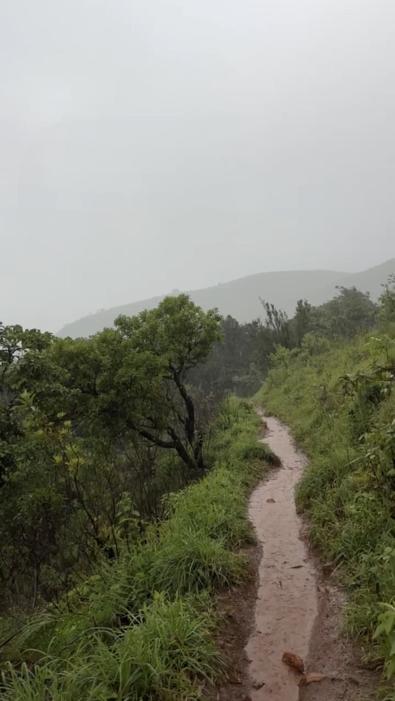
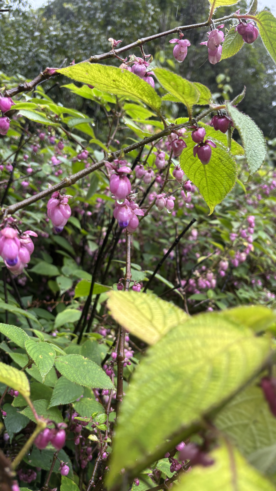
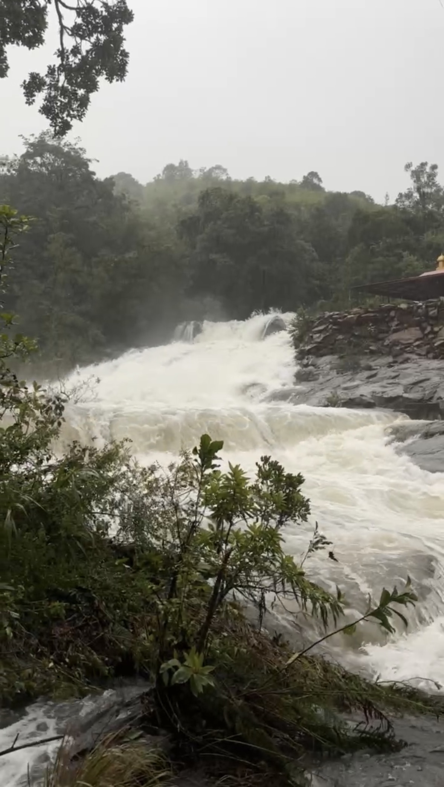
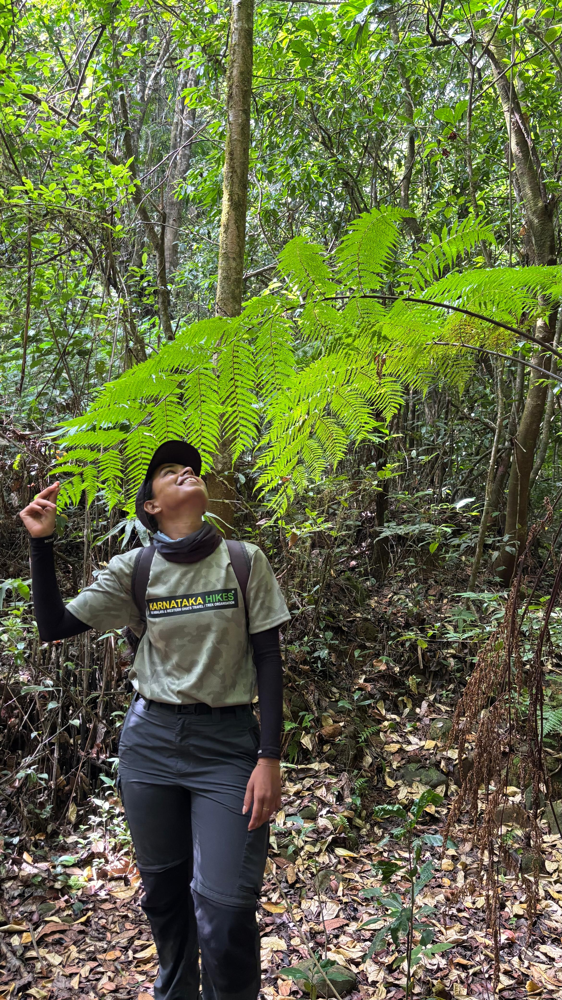
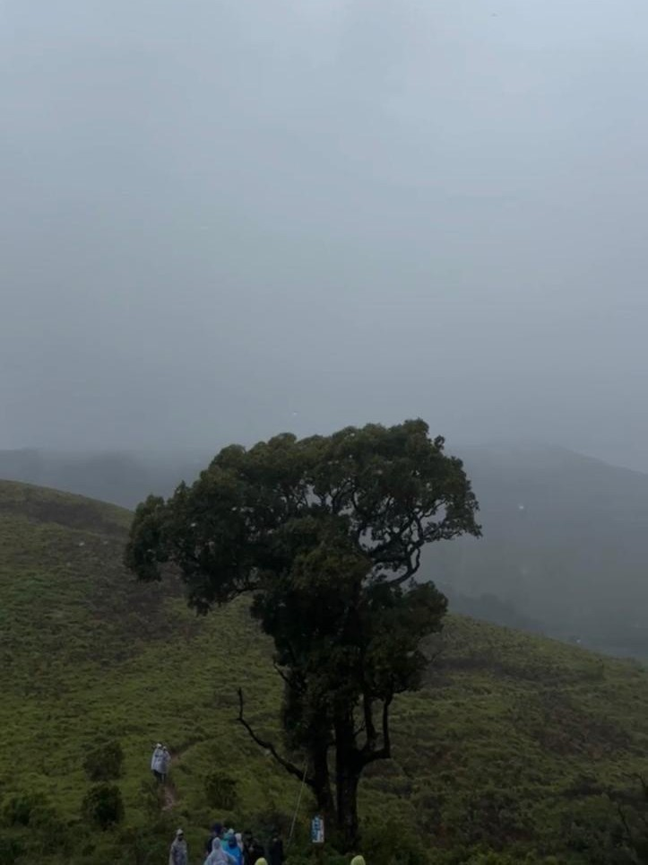
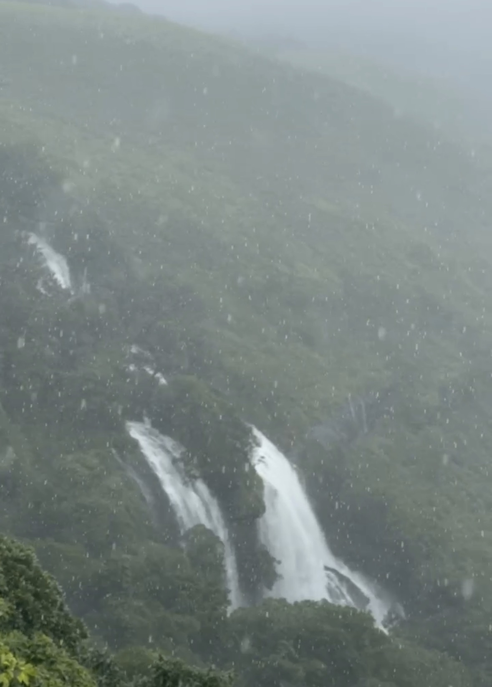
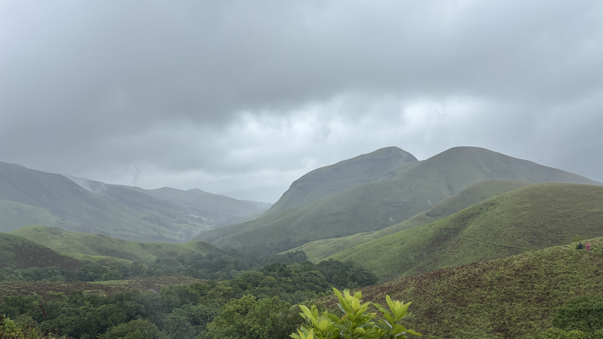
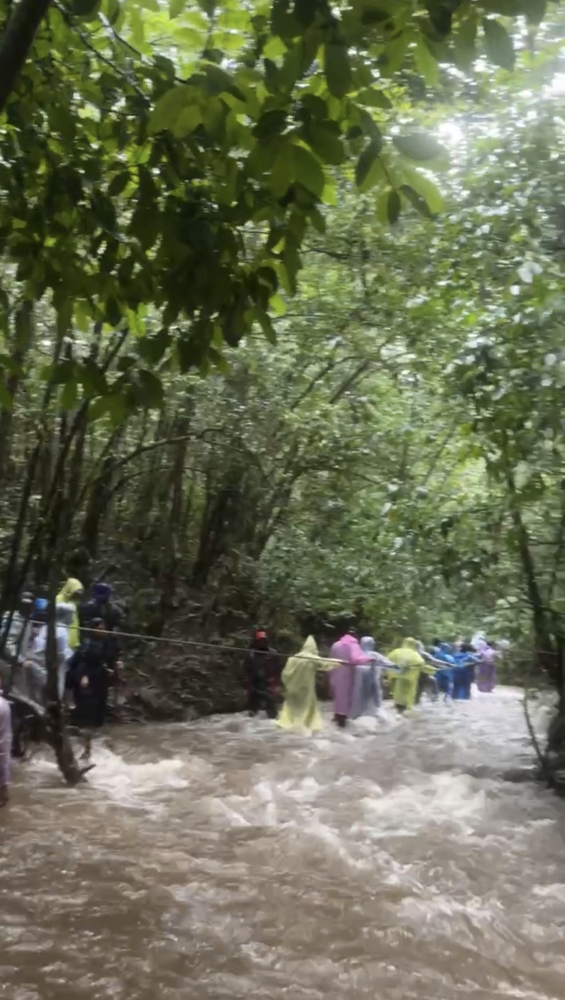

The Mountain With
A Horse's Face
Kudremukha means horse-face. Look at the peak from the right angle and you'll see why — the rock curves like a muzzle, like the mountain was carved mid-gallop and left that way. It sits in Chikkamagaluru district, inside the Kudremukha forest reserve, and it doesn't let you forget you're a guest here. The base is Balagalu. The checkpost is at Mullodi. Everything after that belongs to the forest.
Twenty kilometres, ascent and descent combined. On a road, that's nothing. On this trail, in monsoon, it is a full-day negotiation with mud, water, and your own legs. Thick forest, open grasslands, streams that cross the path so many times you stop counting — that's the shape of Kudremukha. You don't walk through one landscape here. You walk through five, on repeat.




There's a single tree at the start, and then the forest entry point, and then there's no pretending anymore — you're in it. The first real obstacle is a stream crossing they call Nose Stream. You get through it. You think that's the hard part done.
It isn't. The thick forest trail comes next, where your boots and the mud start negotiating with every step, and that's exactly when the leeches show up. They don't announce themselves. They just arrive, small and sure of themselves, like they've been expecting you. Carry a bottle of diluted Dettol with salt in it — separate from your drinking water, always — and check your socks more often than feels necessary.
Then the trail opens. Grassland, then forest again, then a water crossing, and the whole pattern repeats — enough times that you stop tracking which stream is which. Purple flowers along the path. Birds you can hear but rarely see. And underfoot, mud so consistent it starts to feel like part of the trail's personality.



Onti Mara — the single tree, in Kannada — is the halfway point. Around it, shola grassland stretches out, the specialty of the Western Ghats. This grass survives summers that should kill it. It dries out, it browns, it looks finished. Then the monsoon comes and the roots — which hold water the entire time, even through the driest months — send the whole meadow green again like nothing happened. Onti Mara doesn't look dramatic. It just quietly refuses to die, every single year.


Past Onti Mara, the trail stops being gentle. The ascent steepens to something close to 60 degrees, and the path switches back on itself in a zigzag to keep the strain manageable. The soil here is loose, wet, and has no loyalty to your boots. Watching someone else slide is funny. Being the one who slides is not.
There's one last curve near the top of the zigzag that most people walk straight past — nothing marks it, nothing points to it. But in peak monsoon, there's a waterfall there. It exists because of the exact rain that's currently running down your collar. Raw, loud, completely unbothered by whether anyone sees it. You stand there for a second longer than planned.
Past the zigzag, the trail moves through ridges and steep sections until it flattens out. On that flat stretch, there's one more small stream to cross before the final steep push to the top. Nothing about the last section is gentle — it saves its worst for right before the summit, on purpose or not.
At the top, the wind doesn't just blow — it pushes. It leans into you like it wants you gone. And the rain comes with it, sideways, hitting skin like it means to. I have trekked through a lot of the Western Ghats in monsoon. I have not felt wind and rain arrive together, at that force, anywhere else the way I felt it at Kudremukha's summit.


The small stream we'd stepped over near the summit on the way up wasn't small on the way down. It had rained without stopping since morning, and what had been an easy crossing was now a real one — fast, full, and not interested in letting anyone through without a plan. We stood there for a while, waiting for it to settle. It didn't.
Local guides got us across. Not with rope or gear — with knowledge. They know this river's moods the way you know a friend's. Kudos doesn't cover it. Every stream we'd crossed on the way up had grown by the time we came back down, and every time, the same quiet, competent help got everyone through.
By the end, everyone was exhausted in the specific way only rain and altitude can produce — not the tiredness of a 20 km walk on flat road, but something else entirely. Boots full of water, a leech or two still trying its luck, mud that didn't care that we were almost done. That's how a Kudremukha trek ends. Soaked, tired, and completely certain it was worth it.